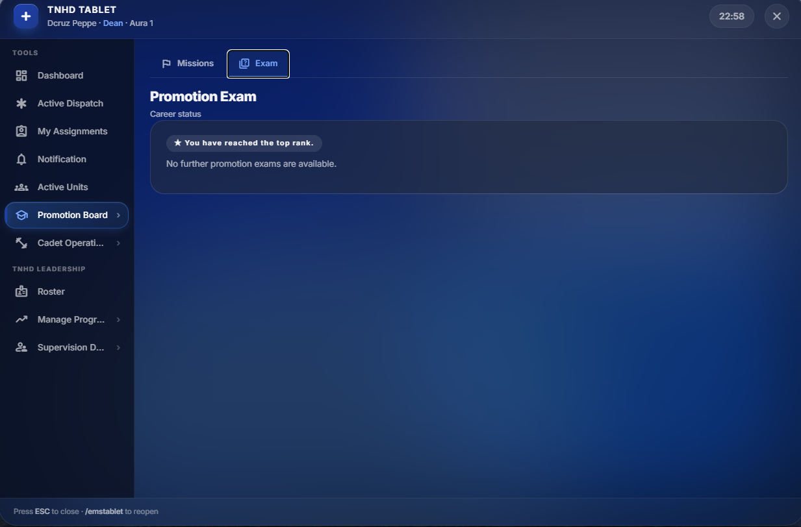

TNHD / Rules
General Doctor Rules
Golden Rules
1. Patient First
Never prioritize Aura over RP.
2. Dispatch Responsibility
Claim only calls you will attend.
3. Professional Conduct
Respect chain of command and maintain medical RP.
Leadership
